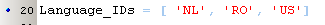
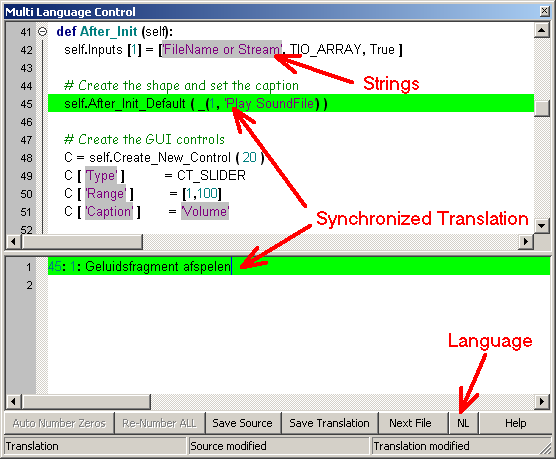
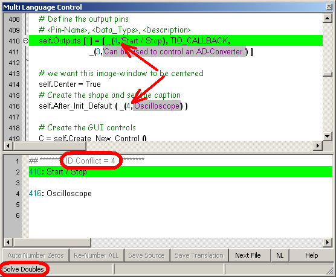
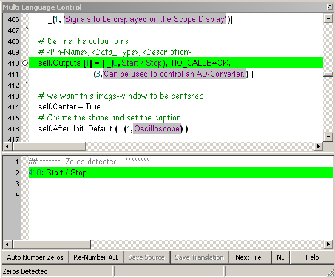
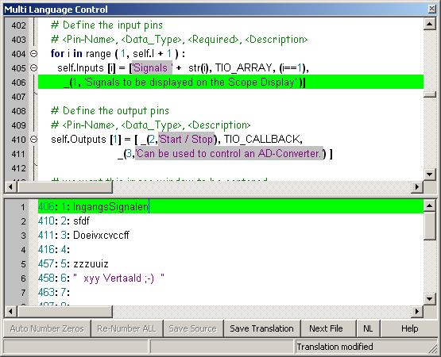
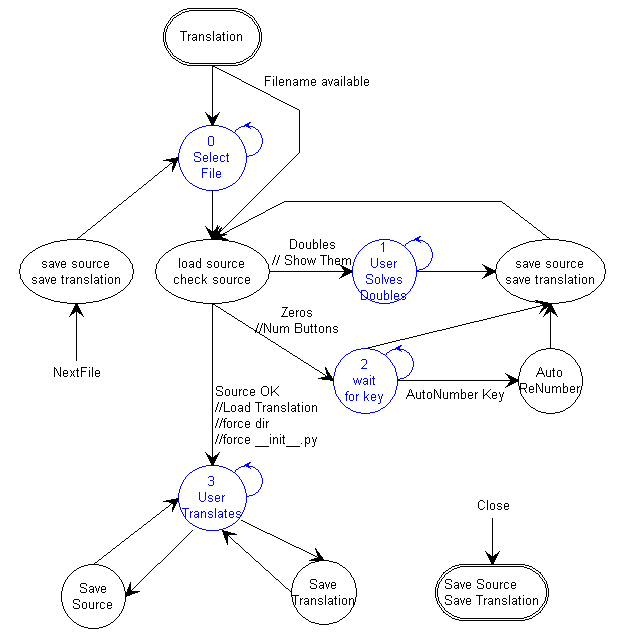

april 2008
Internationalization 
Application Designer / Domain Expert / Control Designer / Core Developer
Introduction
As text is an important factor in presenting domain knowledge, internationalization is of great importance. The standard way of implementing internationalization (in wxPython) is the use of Il8N, Il10N. After downloading the manual I was surprised how complex it was (200 page manual). As "simplicity" goes before "perfect" in my designs, I developed a much simpler way, not as perfect as Il8N, Il10N, but good enough and much simpler. There's even a big disadvantage in using Il8N, Il10N, as the source string is stored as the key of the database, changing the source string will make it unfindable for all other languages. It's not necessary to write the texts in a source file in US-English (the default standard), but you can write texts in any language, as long as you use only one language per file / module.
History
|
Future Ideas |
 new: selecting a second preferred language, that will be invoked it the primary language string can not be found.
new: selecting a second preferred language, that will be invoked it the primary language string can not be found.
 improvement: available languages should not be stored in language_support
improvement: available languages should not be stored in language_support
|
V1.1 released 18-07-2008 |
 improvement: Translation through Babel Fish done with LXML instead of BeatifulSoup
improvement: Translation through Babel Fish done with LXML instead of BeatifulSoup
 improvement: Translation moved to a separate thread
improvement: Translation moved to a separate thread
 improvement: Autocompletion in translation disabled
improvement: Autocompletion in translation disabled
 improvement: Sources and Babel Fish follows Translation, also when navigation with keyboard
improvement: Sources and Babel Fish follows Translation, also when navigation with keyboard
 improvement: Keywords in Translation editor cleared
improvement: Keywords in Translation editor cleared
 bugfix: Tripple quoted strings on more lines were not correctly read / written
bugfix: Tripple quoted strings on more lines were not correctly read / written
|
V1.0 released 10-04-2008 |
 orginal release
orginal release
Cookbook
There's just one thing to remember: just wrap every string in a function call to underscore, with an extra first parameter of zero. So instead of writing:
print "helllo"
write:
print _(0, "hello" )
Now PyLab_Works will try to find a translation in the selected language, if not found the original text is used. Translations that are not found, are logged in a log-file. PyLab_Works will also replace the zero with an unique integer number that serves as a reference for the other languages.
Translation Tool
With the Translation tool it's easy to make a translation of the strings in one or more files, and also to test the original files for strings and see if these strings are made multi-lingual.
After opening a Python source-file, the source file is loaded in the top editor, and the translated strings are displayed in the bottom editor. The 2 editors are synchronized, so selecting a line in the translation editor, will show the source string highlighted in the top editor. All strings in the source editor will have a gray background color, so you can easily find strings that are not multi-lingual and modify them into multi-lingual strings. At the bottom are a series of buttons, which will only be enabled if meaningful in that situation. The statusbar displays the state of the translation ( Conflicts Detected / Zeros Found / Translation ), and the modifications of source file and translated strings. As far as possible, changed files are automatically saved.
The language button will popup a list of all available languages (except "US", because that's the base language. If the desired language is not listed, just add the language in the file language_support.py, to


The first action after opening a source file the sourcefile is checked for conflicts, i.e. multi-lingual strings that are different and have the same ID-nr (unequal zero). The conflicts (probably introduced by copy and paste) can't be solved automatically, because the program can't judge which of the 2 strings is the oldest, and therefor may have already translations to other languages. After solving the conflicts, by changing one or more of the conflicting string IDs into "0", press the "Save Source" button, so the source will be saved and the source file will be automatically rechecked.

The next the program performs is the presence of zero IDs. If found they are listed in the second editor and the renumber buttons become available. In general you will press "Auto Number Zeros", which will fill all zero IDs with a unique number, save the modified source file and start a recheck (which of course is OK now).
There is also a possibility, to renumber all multi-ligual strings in the source file, so all strings get an ordered number. But if there are already translations of this source file, they are all lost !! Therefor this action is protected by a confirmation question.

After conflicts and zeros are solved the translation will be loaded. Now just edit all the translation strings.

Behind the scenes
Here is the state machine, used to create the program.
